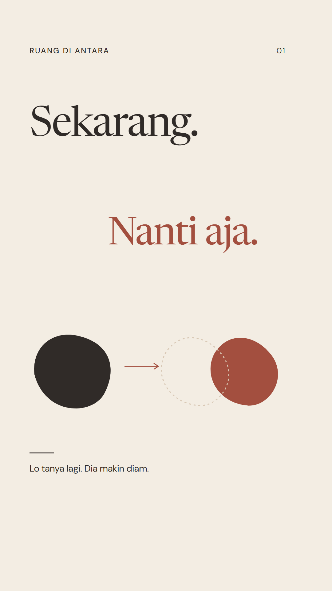
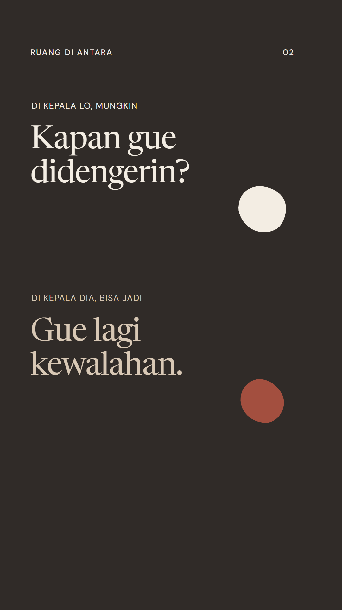
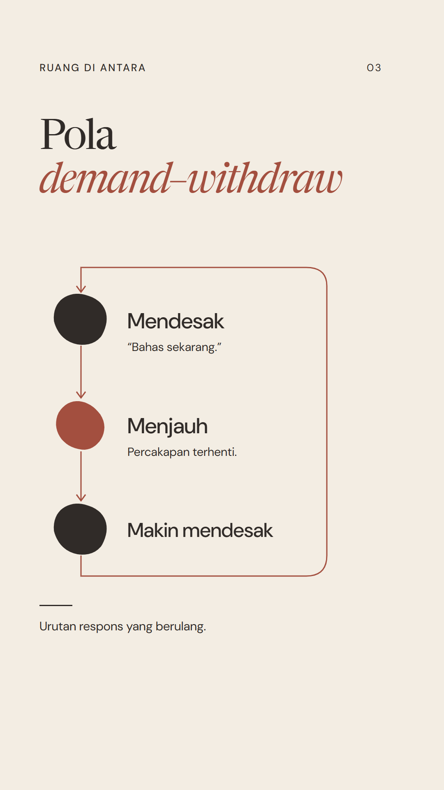
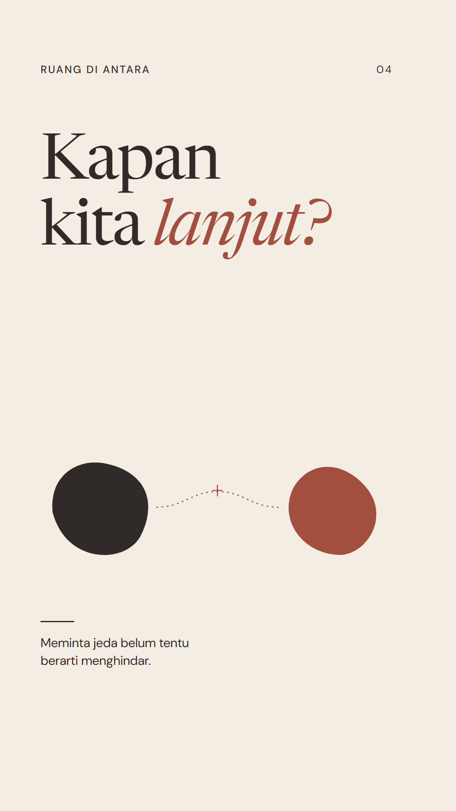
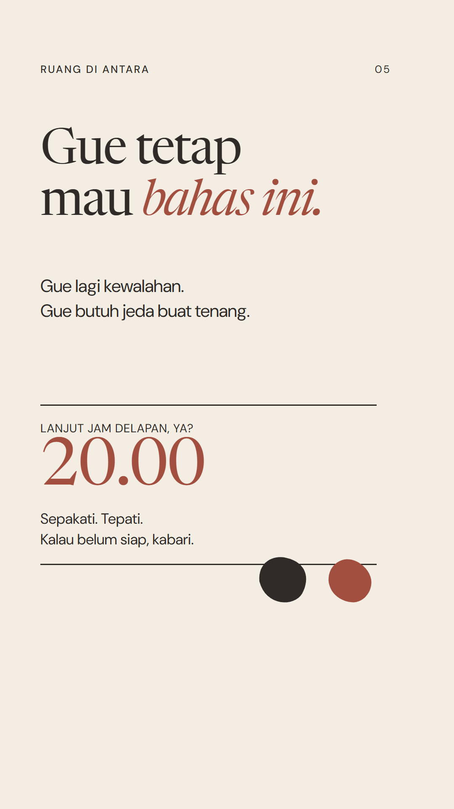
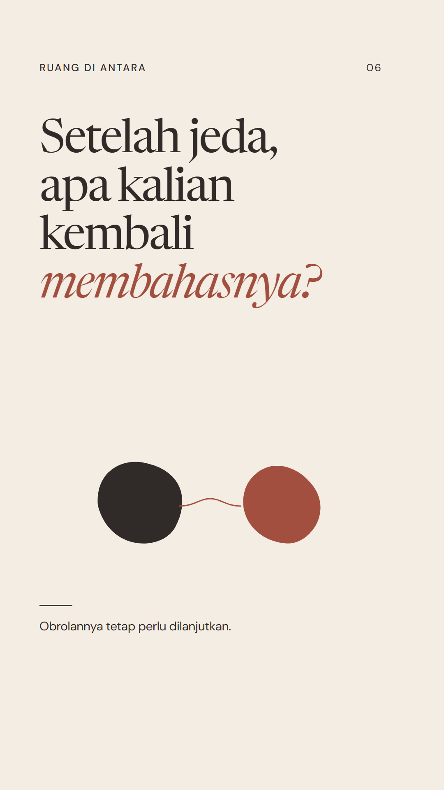

01: Sekarang / nanti
0.0 to 8.0s
Mengenali situasi kecil yang menahan percakapan.
Narasi adegan
Lo pengen beresin sekarang. Dia bilang, “Nanti aja.” Lo tanya lagi. Dia makin diam. Lo makin mendesak. Dia pergi.
Dari urutan mendesak–menjauh ke jeda dengan rencana kembali. Enam pose statis dengan warna dan tipografi final sebagai dasar animasi.
Naskah v1 disetujui
Storyboard v1 menunggu tinjauan
9:16 · estimasi 65 detik

Mengenali situasi kecil yang menahan percakapan.
Lo pengen beresin sekarang. Dia bilang, “Nanti aja.” Lo tanya lagi. Dia makin diam. Lo makin mendesak. Dia pergi.

Membuka dua kemungkinan pengalaman batin tanpa menetapkan motif.
Di kepala lo, mungkin: “Kalau ditunda, kapan gue didengerin?” Di kepala dia, bisa jadi: “Gue udah nggak bisa dengerin kalau begini.”

Memperlihatkan urutan respons sebagai pola, bukan tipe orang.
Kalau desakan dibalas dengan menjauh, lalu makin didesak lagi, percakapannya bisa masuk pola demand–withdraw: satu terus menekan pembahasan, satu terus menarik diri.

Membedakan satu permintaan jeda dari pola menghindar.
Tapi meminta jeda belum tentu berarti menghindar. Coba perjelas kapan obrolannya dilanjutkan. Misalnya:

Memberi contoh jeda dengan rencana kembali yang dapat disepakati.
“Gue lagi kewalahan. Gue butuh jeda buat tenang. Gue tetap mau bahas ini. Kita lanjut jam delapan, ya?” Jamnya perlu disepakati, lalu ditepati. Kalau belum siap, kabari dan sepakati ulang.

Menilai tindak lanjut melalui pertanyaan refleksi.
Jeda itu belum menyelesaikan masalah. Obrolannya tetap perlu dilanjutkan. Di hubungan lo, setelah jeda, apa kalian benar-benar kembali membahasnya?